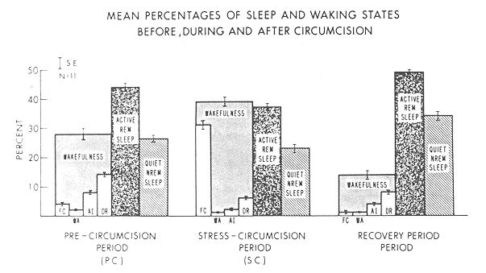

THE CIRCUMCISION REFERENCE LIBRARY
The effect of circumcision on the proportion of subsequent sleep-wake states was assessed in eleven, normal full-term neonates. We speculated, as had been previously suggested, that the proportion of quiet sleep would be increased as a response to this "procedure." Our results demonstrate that no quiet sleep state shifts were present in the immediate hour after circumcision: instead, significant increases in the proportion of wakefulness were noted, suggesting that later quiet sleep state shifts, if present, may be secondary to changes in wakefulness.
Although much research effort has been expended on the study of rapid eye movements (REM, active) and nonrapid eye movement (NREM, quiet) sleep, the functions of these two cyclically recurring states remain obscure. One avenue of exploration to assess function has been the study of relative priorities of one state vis-a-vis the other. In adults, following selective deprivation of either REM or Stage IV NREM sleep, the deprived state is "recovered." Following total sleep deprivation, Stage IV NREM sleep is recovered before REM sleep (1-3).
In two separate studies, using both observational and polygraphic techniques Emde et al. (4) reported a significant selective elevation of the proportion of quiet sleep, a decreased latency to the first quiet sleep period, and increased numbers of quiet sleep periods during the 10 hr of sleep following routine neonatal circumcision. They concluded that these indications of quiet sleep "priority" were not the result of heightened levels of exercise and fatigue surrounding the procedure, but rather, were the manifestations of a "stress" response to the circumcision, similar to the conservation-withdrawal response first described by Engle (5,6). Their suggestion that the inhibited, well regulated physiological state of quiet sleep serves as the organismic substrate of the behaviorally observed conservation-withdrawal syndrome is an interesting speculation.
In a previous study, Anders and Roffwarg (7) reported that following either selective interruption of REM or NREM sleep, or deprivation of total sleep, neonates exhibited a propensity to recover quiet sleep rather than active-REM sleep. This indication of a "priority" for quiet sleep, supports the results reported by Emde et al. (4). Baekland et al. (8) have reported an increase in the proportion of NREM sleep and increased numbers of arousals during the night following presleep exercise. It is not clear from these two studies, however, whether the elicited quiet sleep "priority" is related to the "stress" associated with sleep deprived and/or exercised, or whether it is secondary to the wakefulness and fatigue that results from the experimental manipulations.
From another perspective, several reports have indicated that newborn infants are able to respond rapidly to "arousing" situations by means of another physiological system, the adrenocortical system. Significant increases in plasma cortisol have been reported following short 20-min periods of crying (9,10). Since this response to arousal has been observed to occur within 20 minutes, we speculated that a conservation-withdrawal or quiet sleep response to a "natural stress" might be expected to be as rapid.
The present study attempts to replicate Emde's circumcision study, in a modified way. We looked at the effects of circumcision on immediate changes in sleep-wake state proportions.
Two investigators continuously observed eleven normal 3-day old, full-term, male infants in the nursery for three different noncontiguous 1-hr periods. The three observations were: (1) a precircumcision control hour (PC) immediately following a feeding period preceding the scheduled circumcision; (2) a stress- circumcision hour(SC) immediately following the procedure; and (3) a recovery hour hour (REC) generally after the next scheduled feeding following the circumcision. Though not all the observation periods occurred at the same clock time, the PC and REC hours were comparable periods in the infants activity schedule in that both followed routine scheduled feeding periods. Since newborns normally spend 50% of their interfeeding sleep time in active-REM sleep and 50% in quiet sleep (11) we felt that diurnal factors effecting sleep-wake state proportions would not confound results.
The two investigators, by behavioral observations, rated state every 30 sec, and defined four waking and two sleep states. The waking states were: Fussy-Cry (FC), characterized by vigorous diffuse motor activity and varying intensities of vocalization (crying); Wakeful Activity (WA), characterized by frequent spurts of diffuse motor activity, open eyes, and occasional grunts and whimpers; Alert Inactivity (AI), characterized by occasional directed motor actions and wide open eyes that pursued targets; and Drowsy (DR), characterized by relative immobility, absence of focused attention, and opening and closing of the eyelids. (12) The two sleep states were active (AR), behaviorally defined by the presence of rapid eye movements, facial grimacing, writhing body movements, isolated limb twitches, and irregular respiration; and quiet NREM sleep (QS), defined by the absence of eye movements and body movements except for an occasional startle or burst of nonnutritive sucking, and the presence of regular respiration (13). The overall interrater reliability for definition of sleep wake states was 0.93 for the two observers. Greatest reliability was obtained for the observations of active/REM, quiet and fussy-cry states. Slightly less agreement was obtained for the states of drowsy and alert inactivity.
Our results are depicted in Fig. 1 and Table 1. Significant findings were confined to the redistribution of waking states. Total wakefulness increased during the SC period compared to the two previous periods. (F(2,30) = 5.23; p < 0.05) emphasizing conversely, the total sleep decrement during this period. Since wakefulness during the immediate minutes following the circumcision (sleep onset latency time) was not significantly increased compared to PC control period, the wakefulness noted during this period represented an increase throughout the entire hour rather than only immediately after the trauma.
Shifts within wakefulness were also evident. The PC period was characterized by drowsiness, whereas the SC period was characterized by fussy crying. These differences were significant (p < .001).
Changes within sleep were not as dramatic: the proportional relationships of active REM to quiet sleep noted during the REC period was reduced significantly (p < 0.05) compared to both the PC and SC conditions suggesting that a sleep "rebound" or recovery effect followed the circumcision. The mean latency time to the first quiet NREM sleep period, in contrast, was not significantly reduced. The absence of any initial sleep onset quiet NREM sleep episode in either the SC or REC periods for any infant further failed to support a quiet NREM sleep state priority.
Thus the effect of circumcision in our infant population was an immediate and significant increase in wakefulness, particularly in fussy crying, during the hour following the procedure, and a decreased sleep onset latency time in a recovery period 1.5-7 hr later. No significant changes in active-REM or quiet-NREM sleep state proportions were noted in any period.

Fig. 1 Three 1-hr observations periods are portrayed. The mean
percentages of sleep-wake state proportions, as
distributed within the hour, are presented. Shifts in
the amount and distribution of waking states are
significant in all the periods.
|
Table. 1 Sleep Onset and NREM Sleep Onset Latency
Times (Min)
Infant Time of Observation Sleep Onset Lat. NREM Sleep Onset Lat.
No. A = A. M.; P = P. M.
PC SC REC PC SC REC PC SC REC
1 9:57A 2:34P 9:15P 7.0 11.0 11.0 14.0 26.0 28.5
2 9:12P 8:14A 1:18P 21.0 28.5 8.0 39.0 37.5 18.0
3 9:25A 11:02A 1:26P 7.0 5.5 2.0 60.0 19.5 22.0
4 9:00P 8:35A 1:15P 11.5 3.0 1.0 34.0 7.5 30.0
5 9:41A 12:03P 1:25P 9.0 7.0 6.0 18.0 60.0 36.5
6 8:45P 8:05A 1:00P 14.5 11.0 0.5 45.0 28.0 10.5
7 9:12P 8:10A 9:40A 15.0 20.0 4.5 26.5 30.0 34.0
8 9:05P 8:10A 9:40A 11.0 8.0 0.5 60.0 60.0 4.5
9 8:08P 8:50A 10:35A 13.5 13.5 5.5 32.0 45.0 18.5
10 9:02P 8:00A 1:15A 4.0 2.5 5.0 45.0 45.0 20.0
11 9:01P 8:15A 1:00P 6.5 3.0 4.0 15.5 7.5 60.0
____ ---- ---- ---- ---- ---- ----
X 10.9 10.3 4.3 35.4 32.1 25.7
(S.D.) (4.9) (8.0) (3.4) (16.)(17.8)(14.9)
------------------------------------------------------------------
PC = Precircumcision period. F(2,30 = 4.425
SC = Stress-circumcision period. F(2,30 = 0.9946
REC = Recovery period. p = <0.05 p= n.s.
|
In this study we attempted to ascertain whether a possible function of quiet sleep in the neonate was the response to "stress." Some understanding of what capacities infants have for interacting with the environment has been the research concern of many investigators. Stern (1-4), for example, has demonstrated that the ability to look toward or away for a caretaker comes under executive control quite early in the infant's development. By three months of age the infant's control of gaze shifting is almost as mature as the adults. Of similar interest is the amount of control the infant exerts over physiological states of arousal. Engel (5,6) has suggested that the conservation- withdrawal response represents a shift of states in a stressful situation when the more typical fight-flight response is unavailable. The reaction is characterized by increased sensory thresholds, withdrawal of attention, self-preoccupation and at times sleep. In the study by Emde et al. (4) the psycho- physiological increase of quiet sleep resembled the conservation-withdrawal reaction, suggesting a relationship between the two; and, suggesting further, that such shifts reflect early executive control in times of stress.
Our study differ in several important respects from that of Emde's group. Our circumcision procedures were acute, lasting not more than 10-15 min; theirs employed the use of an acute incision and the subsequent application of a chronic ligature causing ischemic necrosis of the foreskin over several days. Our study employed behavioral observations for 3 separate 1-hr time blocs, whereas theirs employed polygraphic recordings and compared two 10hr time periods; one on the night previous to, and the other immediately following the circumcision. Our study used each infant as his own control, theirs had a noncircumcised control population.
Their results of clear-cut increases in quiet sleep without changes in the amount of wakefulness were not replicated in our study. Although they mention, in passing, that crying and activity were increased for a mean of 15.6 min during circumcision, these shifts were not carried over into the subsequent sleep period. We found a marked increase in the fussy-crying state, which persisted through much of the first hour of observation following circumcision and, no significant quiet sleep changes during that hour or in a subsequent REC period 1.5 to 7 hr. later. These differences might well be accounted for by the more "traumatic," acute circumcision procedure experienced by our subjects in contrast to their more chronic method; though if this were so, a "stress" response should be even more evident. That is, if the circumcision were "stressful," and that change in quiet sleep were a response to that "stress," we would expect to find proportional shifts of quiet sleep in the expected direction immediately after the procedure. We might also expect that following the "stress," an infant would immediately enter into quiet sleep (in contrast to the normal active-REM sleep onset of neonates) or at least exhibit a decreased latency time to the first quiet sleep period. While these findings were reported by Emde, they also should have been present in our study, regardless of the nature of the circumcision. We were unable to demonstrate them, however.
Finally our results resembled those of our previous polygraphic study (7) in which quiet sleep rations were increased following induced wakefulness. These infants showed clear increases in the proportions of their quiet sleep (quiet sleep "rebounds") in subsequent undisturbed recovery sleep. In that group, as in our present cohort, the sleep onset latency time in REC periods was significantly reduced compared to baseline periods as well. Thus the REC periods of infants in our present study resembled those of infants previously studied after increased amounts of wakefulness.
Emde et al. (4) assert that their sleep findings were not related to prior wakefulness because other infants had been observed with long periods of spontaneous wakefulness which were not followed by changes in quiet sleep. Our present and previous findings, in contrast, suggest that the significant effect of circumcision is upon wakefulness and that proportional changes of sleep states seem secondary to the increased amount of wakefulness. Since prolonged periods of spontaneous wakefulness may not be associated with the same measure of arousal, exercise, and fatigue as periods of wakefulness following circumcision, we suggest that the "type" or "quality" of wakefulness may be important in determining subsequent sleep state proportions and patterns.
Further investigation is required to resolve these complex interrelationships and to elucidate whether neonates are capable of executing a psychophysiological "inhibiting" response to "stress."
In this study we attempted to ascertain whether human neonates could demonstrate any evidence of executive control over physiologic states. Specifically we observed the sleep-wake proportions of a group of 11 newborns during three 1-hr periods surrounding the "stress" of circumcision. We speculated that executive control would be evidenced by a reduction in the proportion of wakefulness following the procedure and a concomitant increase in the proportion of quiet sleep, resembling the conservation-withdrawal response. Instead we found increases in wakefulness with no significant shifts in sleep state proportions. We conclude that little executive control over sleep state proportions exist.
Copyright 1974 by American Psychosomatic Society, Inc. Published by American Elsevier Publishing Company, Inc.
http://www.cirp.org/library/birth/anders/